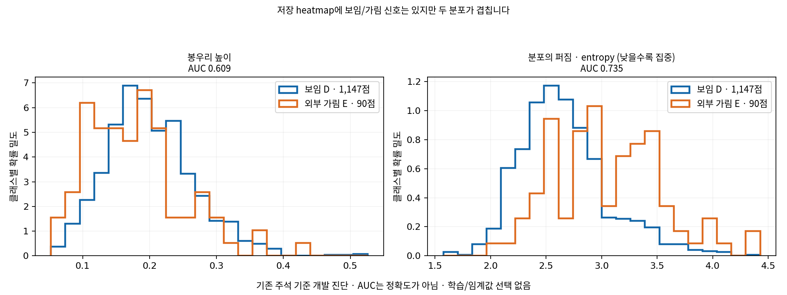

현재 VIS head는 crop 전체 특징의 균등 평균을 읽습니다. 위치 heatmap으로 점 주변의 특징을 골라 읽는 구조는 아직 사용하지 않았습니다. 다음 개선 가설은 heatmap → 위치 주변 특징 + 주변 맥락 → D/E 판단입니다. 이 구조의 성능은 아직 검증하지 않았습니다.
현재 heatmap은 각 crop에서 합이 1인 softmax이며, E에는 위치 heatmap 정답을 주지 않았습니다. 따라서 가려져도 봉우리가 생깁니다. 봉우리 자체를 보임 확률로 사용할 수는 없습니다. 위치를 못 찾음/검색 범위 밖도 외부 가림과 구분해야 합니다.

기존 PRIMARY 주석의 D 1,147점/E 90점 기준입니다. AUC는 D/E 한 쌍의 순서를 점수가 맞추는 정도이며 분류 정확도나 보증된 성능이 아닙니다. 목재/정사각형 및 256칸 모두 유효한 crop에서도 별도로 집계했습니다. 데이터 일부의 주석·native 대응은 재검토가 필요합니다.
| 그룹 | 집계 | D | E | 높은 peak AUC | 낮은 entropy AUC | 정규화 entropy AUC |
|---|---|---|---|---|---|---|
| ALL | PRIMARY_supported | 1147 | 90 | 0.609 | 0.735 | 0.733 |
| ALL | PRIMARY_supported_full256 | 1122 | 89 | 0.603 | 0.731 | 0.731 |
| WOOD_PRIMARY105 | PRIMARY_supported | 616 | 29 | 0.619 | 0.721 | 0.719 |
| WOOD_PRIMARY105 | PRIMARY_supported_full256 | 600 | 28 | 0.604 | 0.711 | 0.711 |
| SQUARE118 | PRIMARY_supported | 531 | 61 | 0.631 | 0.776 | 0.775 |
| SQUARE118 | PRIMARY_supported_full256 | 522 | 61 | 0.631 | 0.777 | 0.777 |
이번 작업: 저장 배열·주석 재집계만 수행. 새 학습, 모델 추론, PnP, 임계값 선택 없음. 반복 확인한 기존 개발 평가 자료이며 독립 검증 결과가 아닙니다.
입력 SHA·결과 JSON · 1,237점 수치 · 재현 코드 · 원 사례 갤러리